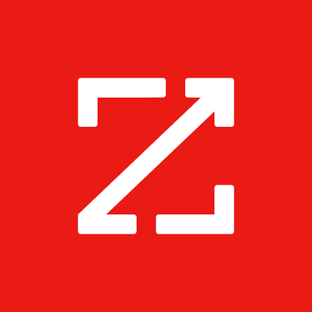
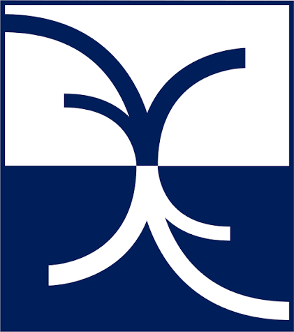
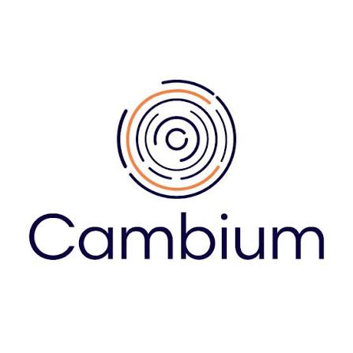

Hands-on Engineering Team Lead with 10+ years of software engineering experience across full-stack development, backend systems, and technical leadership. In recent years, focused on building AI-powered developer tools, LLM-based workflows, MCP integrations, and engineering automation. Experienced in leading engineers while staying deeply involved in architecture, implementation, and delivery across frontend, backend, APIs, microservices, and infrastructure.
Experience
Team Lead, Software Engineering
2024 – Present

ZoomInfo — Productivity Engineering- Lead a Productivity Engineering team of 4 engineers, while remaining hands-on in building AI-powered developer tools and productivity platforms.
- Work hands-on with AI coding agents as part of daily software development and engineering workflows.
- Build AI-assisted engineering workflows using LLMs and MCP integrations, with workflows initiated either by engineers or automatically triggered by engineering metrics.
Key AI & Developer Productivity Initiatives
- Engineering AI Workflows: developed and iterated on practical AI-powered workflows and multi agent system based on real engineering needs and usage.
- MCP for Internal Design System: built an MCP integration connected to the UI monorepo, enabling engineers across UI teams to query, interact with, and update Design System components through AI-assisted development.
- MCP for Datadog: built an integration enabling AI-assisted log analysis and observability workflows.
Hands-on AI leadership:
worked closely with engineering teams to develop, test, adopt and
continuously improve AI-powered tools and workflows while staying
directly involved in implementation and technical decisions.
Team Leader — Full-Stack Engineering
2020 – 2024
ZoomInfo
- Led end-to-end delivery of full-stack features across frontend, backend microservices, APIs, and databases serving enterprise customers at scale.
- Built and maintained backend microservices and APIs, including deployment and operation on Kubernetes.
- Migrated CI/CD workflows to GitHub Actions based on engineering and delivery needs.
- Drove architecture decisions and worked cross-functionally with Product, Design, and QA.
- Established a strong engineering culture around quality and reliability, including early adoption of unit testing practices.
Full-Stack Engineer
2020
ZoomInfo
- Built and maintained full-stack products involving complex business logic, APIs, frontend applications, and large-scale data operations.
- Worked across Angular, TypeScript, Node.js, and SQL.
- Became the first engineer at ZoomInfo to implement unit testing practices, helping establish a foundation for broader automated testing.
Front-End Developer
2018 – 2020

Broadridge Financial Solutions- Developed Angular-based financial applications for major US clients.
- Implemented state management using NGRX Store and contributed to unit testing.
- Participated in architectural decisions and system performance improvements.
- Collaborated closely with a distributed QA team based in India.
Front-End Developer
2013 – 2018

Cambium (acquired by Matrix)- Developed multiple mobile and web applications including Next Star, Or Yarok, and LaMetayel Checklist.
- Built CMS platforms for Sport5 and Channel 13, including user and content management systems.
- Developed responsive web applications for real-estate startups and Channel 13.
- Implemented server-side rendering for Channel 10's website.
Core Strengths
AI Engineering:
AI coding agents, LLM workflows, MCP integrations, AI-powered developer
tooling, engineering automation.
Full-Stack Engineering:
Angular, TypeScript, Node.js, APIs, microservices, databases and
infrastructure.
Technical Leadership:
team leadership, architecture, technical planning, mentoring,
cross-functional collaboration and hands-on delivery.
Engineering Infrastructure:
Kubernetes, CI/CD, GitHub Actions, Git, observability and
developer productivity.